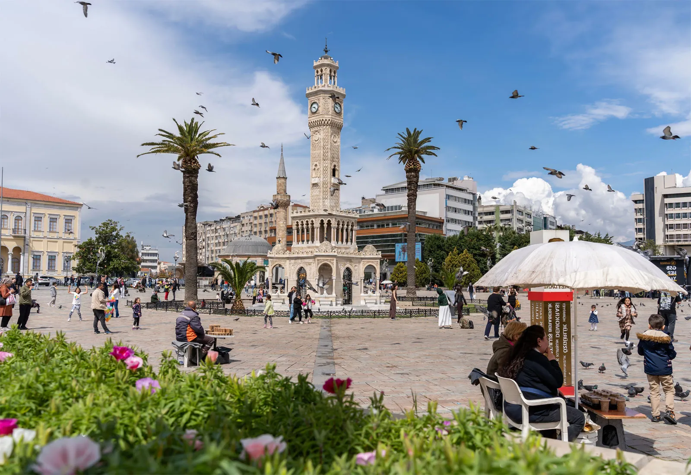
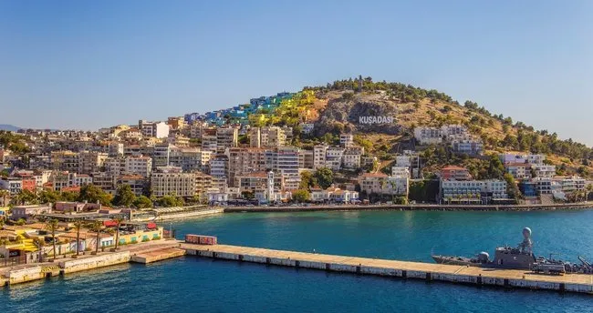
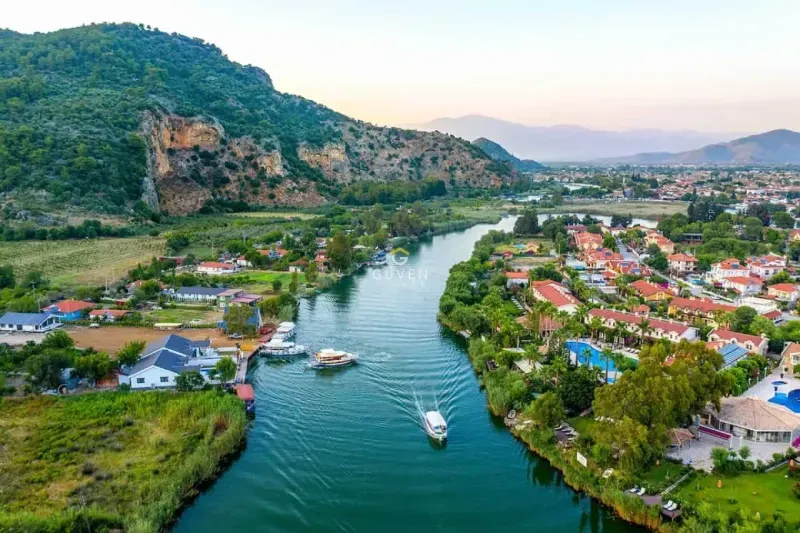
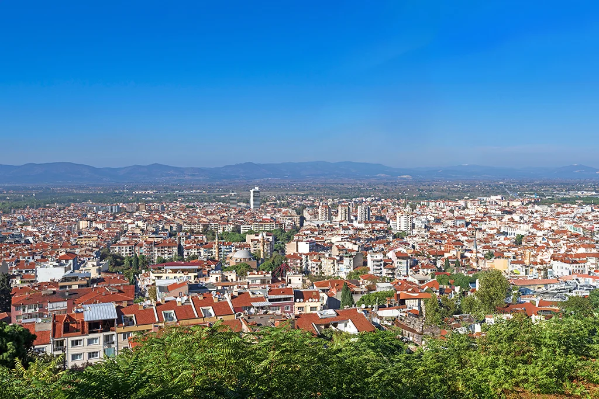
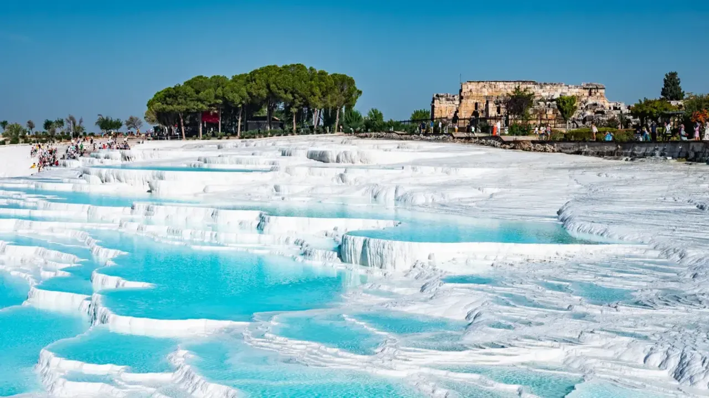
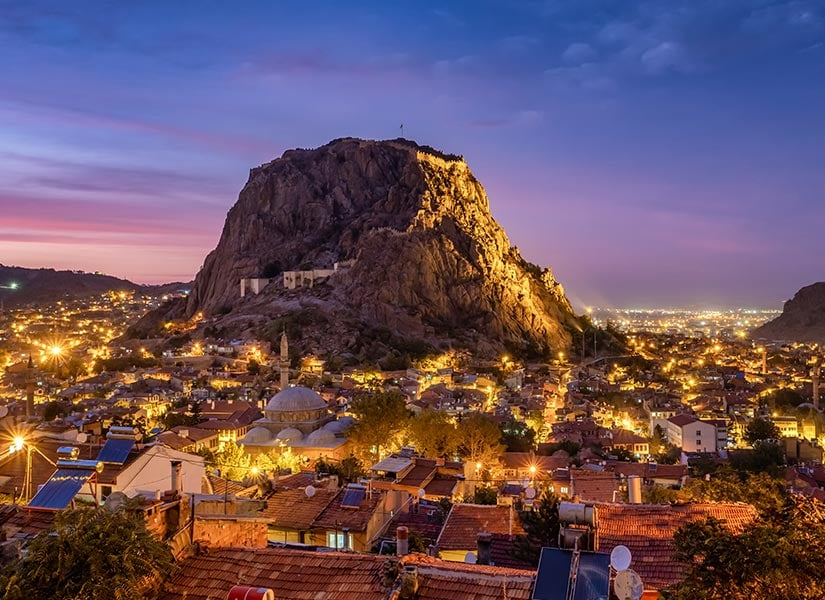
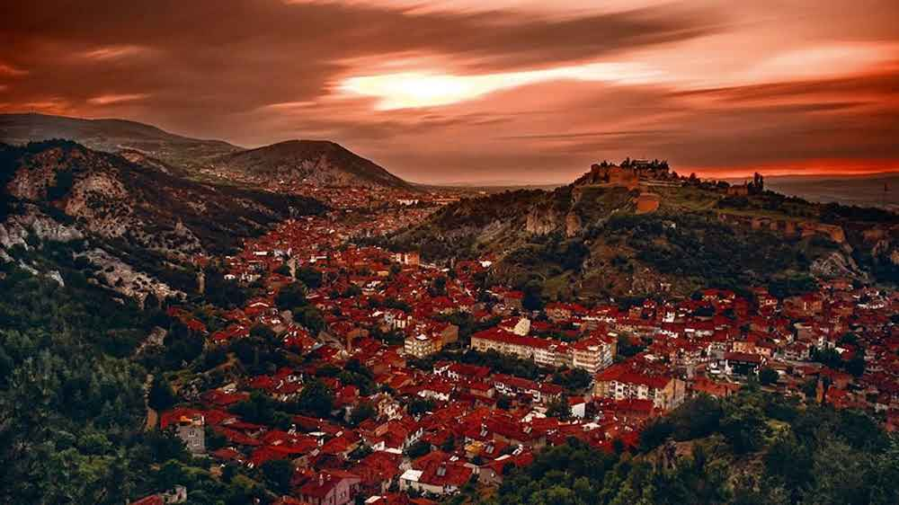
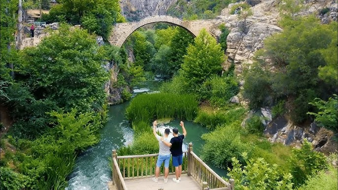
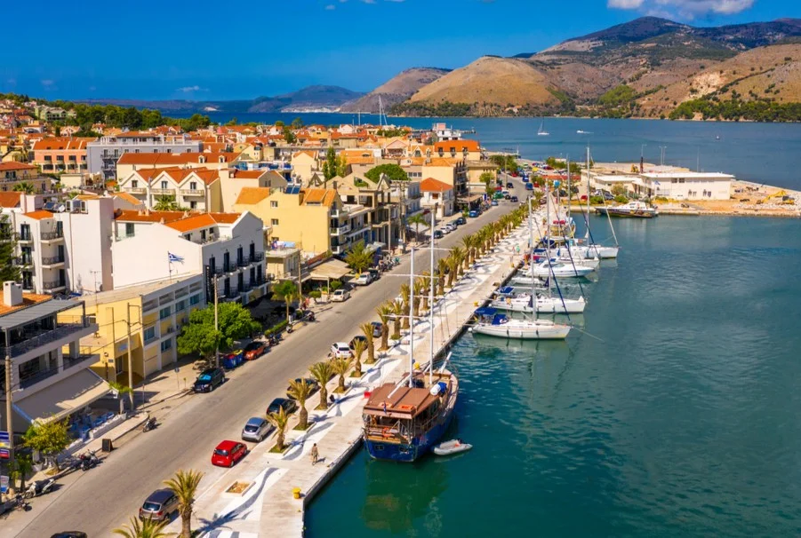

Kordonboyu, Saat Kulesi ve Ege'nin sıcak ruhuyla ünlüdür.

Aphrodisias Antik Kenti ve Didim sahilleri ile tanınır.

Bodrum, Fethiye ve Marmaris gibi turizm cennetlerine ev sahipliği yapar.

Mesir Macunu ve Spil Dağı ile tarihi ve doğal güzellikler sunar.

Pamukkale travertenleri ve Hierapolis Antik Kenti ile dikkat çeker.

Şifalı kaplıcaları ve tarihi kalesiyle meşhur bir şehirdir.

Çinileri, kaleleri ve geleneksel el sanatlarıyla bilinen sanatsal bir şehirdir.

Ulubey Kanyonu ve tarihi Frig Vadisi ile doğayla buluşturur.

Ayvalık sahilleri ve Kazdağları’nın yeşil doğasıyla göz doldurur.